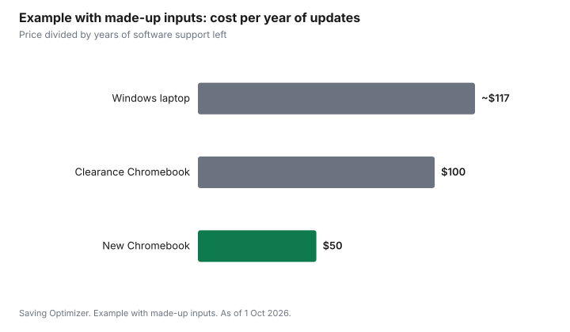

Technology · Canada
Chromebook vs Windows Laptop for Kids' Schoolwork in Canada
In Canada, the right laptop for a child's schoolwork depends first on what the school uses. Ask the teacher or board whether classes run on Google Workspace for Education or Microsoft 365, and whether any course needs Windows or Mac software. If school work is web-based, a Chromebook is usually cheaper, simpler and easier to manage. If your child needs desktop software (for some high school courses in design, coding or video), a Windows laptop fits better. Check how long the device will get software updates.
Key takeaways
- Ask the school: platform, required software, and whether it lends devices.
- Chromebook: web apps, lower price, simple management; check the Auto Update Expiration date.
- Windows: desktop software, more flexibility, usually more cost and upkeep.
- Compare cost per year of updates, not just the price.
- Example with made-up inputs: a $350 Chromebook with 7 years of updates is $50 a year.
Chromebook vs Windows compared
| Factor | Chromebook | Windows laptop |
|---|---|---|
| Price | Often lower | Wide range |
| Software | Web apps and Android apps | Desktop software, plus web apps |
| Updates | Automatic until the Auto Update Expiration date | Windows updates; hardware support varies |
| Management | Simple; Google Family Link for parental controls | Microsoft Family Safety and more settings |
| Best for | Elementary and web-based school work | Specialized courses and older students |
Check the update date
Every Chromebook has an Auto Update Expiration date, after which it stops getting security and feature updates. Google provides up to 10 years of updates for newer models; check the date for the exact model on Google's support site before buying, especially for older or clearance stock. For Windows laptops, check that the hardware supports the current version of Windows.
Ways to save
- Ask whether the school lends devices or has a device program.
- Refurbished and education-priced models can cost less.
- Back-to-school sales; compare against price history.
- A sturdy case and spill-resistant keyboard can save repair costs for younger kids.
Questions to ask the school
- Which platform do classes use: Google Workspace for Education, Microsoft 365, or both?
- Does any course need software that only runs on Windows or Mac?
- Does the school or board lend devices, or run a bring-your-own-device program with minimum specs?
- Are there testing or exam apps with device requirements?
- Is there school Wi-Fi access for personal devices, and are any devices blocked?
Requirements tend to grow in high school. Elementary students mostly use web apps, while some secondary courses in technology, design, media or computer science use desktop software. If a child is two or three years from high school, ask what those courses use before buying a device meant to last.
Specs that matter for schoolwork
| Spec | Chromebook | Windows laptop |
|---|---|---|
| Memory (RAM) | Enough for many browser tabs; more helps with heavy multitasking | More memory helps with Windows and desktop apps |
| Storage | Mostly cloud-based; modest local storage is common | An SSD rather than a hard drive; enough room for updates |
| Screen | A size the child can carry; touch is useful for younger kids | Same; consider weight for daily carrying |
| Battery | Enough for a school day | Check real-world battery reviews |
| Build | Rugged education models exist | Spill-resistant keyboards and sturdy hinges help |
Parental controls and safety
Google Family Link lets parents manage a child's Google account on a Chromebook: app approvals, website filters and screen time. Microsoft Family Safety does similar things on Windows. School-managed accounts may have their own filters and may limit what parents can change. Set up a separate child account rather than sharing a parent's account, and keep the device in a shared space for younger kids.
Example with made-up inputs: one device for two children
These numbers are an example with made-up inputs. A family has a child in grade 4 and one in grade 8. The school uses web apps for both. One shared Chromebook at $350 works for the younger child, while the older child, starting a high school design course in a year, needs desktop software. Buying a $350 Chromebook now and a $700 Windows laptop next year costs $1,050; buying two Windows laptops now would cost $1,400.
Refurbished Chromebooks and laptops can be good value for school, but check the remaining update years for Chromebooks and the Windows version support for laptops, and look for a warranty of at least several months.
Common mistakes
- Buying a clearance Chromebook with only a year or two of updates left.
- Buying a powerful Windows laptop for a child whose school is entirely web-based.
- Ignoring weight and battery life for a device carried every day.
- Skipping a protective case, which costs far less than a screen repair.
- Using a parent's account on the child's device, which mixes data and weakens controls.
Example with made-up inputs: cost per year of updates
These numbers are an example with made-up inputs, not current prices or update dates.
| Device | Price | Years of updates left | Cost per year |
|---|---|---|---|
| New Chromebook | $350 | 7 | $50 |
| Clearance Chromebook | $200 | 2 | $100 |
| Windows laptop | $700 | 6 | about $117 |

Sources
- Google, Chromebook Auto Update policy, as of 1 Oct 2026. Up to 10 years of automatic updates for newer models; check each model's date.
- Google Family Link and Microsoft Family Safety parental controls, as of 1 Oct 2026.
- The prices and update years in the example table and chart are made-up inputs.
Frequently asked questions
Is a Chromebook good enough for school in Canada?
Often, if the school uses web-based tools such as Google Workspace for Education. Ask whether any course needs Windows or Mac software.
When does my child need a Windows laptop?
When a course needs desktop software, such as some design, coding or video courses in high school.
What is a Chromebook's Auto Update Expiration date?
The date the device stops getting updates. Google provides up to 10 years for newer models; check the exact model before buying.
Are cheap clearance Chromebooks a good deal?
Only if they have enough update years left. Divide the price by the remaining years.
Can I set parental controls?
Yes. Chromebooks use Google Family Link and Windows uses Microsoft Family Safety.
What specs does a school Chromebook need?
Enough memory for many browser tabs, a screen size the child can carry, a battery that lasts a school day, and enough update years left. Ask the school whether it sets minimum specs.
Do parental controls work on school accounts?
School-managed accounts may have their own filters and may limit parental settings. Use a separate child account for personal use where possible.
Should I buy a laptop that will last through high school?
Ask what high school courses use first. If your child is a few years away, a cheaper device now and the right one later can cost less.
Can a Chromebook run Microsoft Office?
Chromebooks can use the web versions of Microsoft 365 apps in the browser. Desktop-only software will not run; ask the school whether courses need it.
How much storage does a school Chromebook need?
Chromebooks rely mostly on cloud storage, so modest local storage is common. Ask whether the school uses offline apps that need more space.
Researched and drafted with AI assistance and fact-checked against official Canadian sources. How we create content.
Disclosure: Laptops are described by type; no model or retailer is ranked. Google and Microsoft are named for their platforms, not as partners. Saving Optimizer may earn a commission if a partner link is added later; no partnership is claimed. Education only.